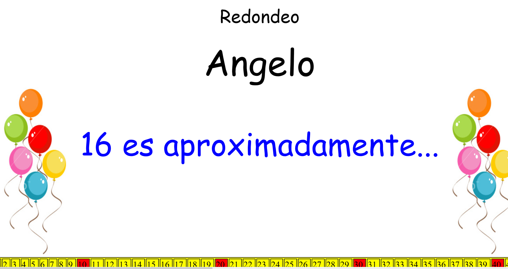
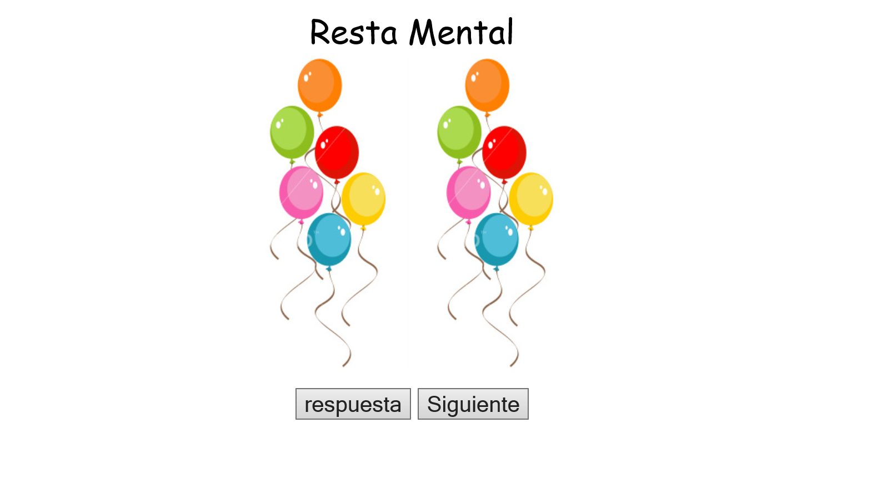
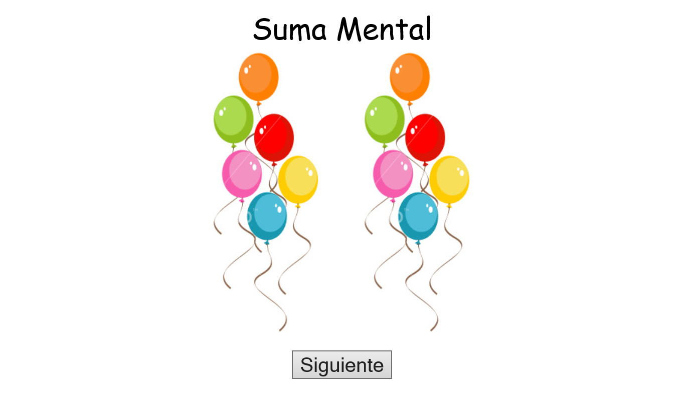

| My Work |
Some time ago, I developed some small programs using HTML, CSS and Javascript to help the children get better in our Math lessons:
|  |
Rounding |
Students see a number on the screen and check try to round to the nearest hundred. |
|  |
Mental Math: Subtraction |
The computer show a subtraction on the screen and
then the student tries to solve it. When the student is ready presses a button to
check the answer. |
|  |
Mental Math: Addition |
Very similar to the last one, but instead of presenting substractions to the students,
it presents additions. |
 |
Addition and subtraction using a hundred Table |
The computer presents a Hundred Table to help students determine the answer to the
problem on the screen. |
|